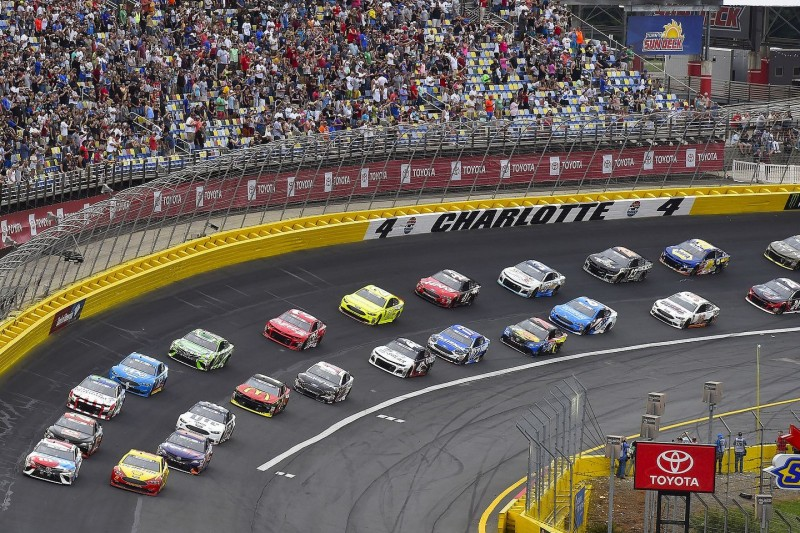
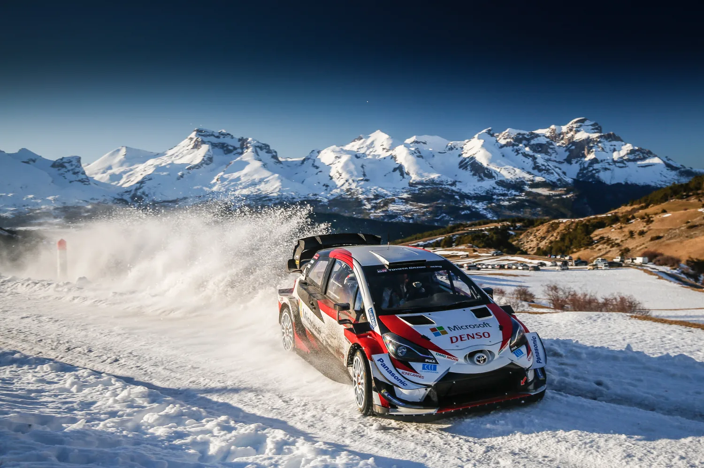

GT Racecars
Ein Rennwagen ist sowohl ein für den überwiegenden oder ausschließlichen Einsatz im Automobilsport konstruiertes Kraftfahrzeug. Folglich zeichnen sich Rennwagen im Wesentlichen dadurch aus, dass das Entwicklungsziel nicht durch die Personen- oder Güterbeförderung, sondern vielmehr durch das Ausloten technischer und fahrerischer Grenzen bestimmt wird. Die Klassifizierung von Rennautos richtet sich nach konstruktiven Merkmalen, Stückzahl und Einsatzbereichen. So gibt es verschiedenste Klassen für den Einsatz von unterschiedlichen Rennfahrzeugen, angefangen von der als „Königsklasse“ bezeichneten Formel 1, über die sogenannten World Rally Cars der Rallye-Weltmeisterschaft, die GT-Fahrzeuge und Le-Mans-Prototypen bis hin zu den heutigen Tourenwagen sowie den CanAm- und NASCAR-Rennwagen und anderer Klassen.
Die DTM ist die bedeutendste Rennserie Deutschlands.Die Rennserie existiert seit 1984 im Rahmen des Deutschen Automobilsport Verbandes. Seit der Saison 2000 ist sie in der aktuellen Form bekannt und die Teams treten in der Kategorie Prototypen an. Die Aktuellen Herrsteller welche sich das Starterfeld von 18 Fahrzeugen aufteilen sin Aston Martin, BMW und Audi. Mit dem Ausstieg von Mercedes-Benz Ende 2018 verlor der Sport eines der ältesten Teams und Herrsteller. Die bekanntesten Fahrer der DTM waren Hans-Joachim Stuck, Thomas Winckelhock und Walter Röhrl.

Toyota begann Anfang 2014 an der FIA WEC Langstreckenweltmeisterschaft teilzunehmen damals noch mit dem TS040. Ab 2016 wurde dann auf den TS050 gerüstet und die Erfolge begannen zu kommen. Der wichtigste LAuf der ganzen Saison stand bevor, die 24 Stunden von LeMans, alle dachten es würde ein Zweikampf zwischrn Audi und Porsche doch überraschender Weise war es Toyota die mit nur einer Stunde reststrecke führeten. Es war jedoch nicht der Triumphtag von Toyota denn nur 3 Minuten vor Schluss blieb Kazuki Nakajima auf der Startziellinie stehen. Glücklicher weise konnte Toyota zurückkommen und holte sich 2018 und 2019 den Sieg.

Die Liga der Deutschen Supersportwagen oder auch Die ADAC GT Masters ist eine deutsche Rennserie welche vom ADAC geleitet wird. In der Serie wird mit GT3 fahrzeugen gefahren, dies ist die wohl am besten geeignetste Rennserie für spannende Zweikämpfe und hatre Rad an Rad Manöver. Zur Serie gehört auch der Zuschauerliebling die Corvette C7.R des Privatherstellers Callaway. Die Corvette konnte sich 2017 sogar die Meisterschaft sichern, nachdem sie diese 2016 im letzten Rennen verloren. Seither ist die Corvette C7 immer im Meisterschaftskampf involviert jedoch immer nur mit einer Hand am Meisterschaftspokal.
Die IMSA WeatherTech SportsCar Championship ist eine 2013 gegründete Sportwagen-Serie in den Vereinigten Staaten und Kanada. Gemäß einer Sponsorenvereinbarung lautet der offizielle Name zurzeit IMSA WeatherTech SportsCar Championship (IWSC). Die Serie wird von der International Motor Sports Association ausgerichtet. Im Rahmen der IWSC wird auch der North American Endurance Cup ausgetragen. Die erste Saison der Serie fand 2014 statt. Von 2014 bis 2015 war die Serie unter dem Namen Tudor United SportsCar Championship bekannt. Das neuste Auto der Meisterschaft ist die 2020 beigetretene Chevrolet Corvette C8.R.
Die NASCAR (National Association for Stock Car Auto Racing) ist ein großer US-amerikanischer Motorsportverband mit Sitz in Daytona Beach. Der Name leitet sich von „Stock Car“ (dt. Serienfahrzeug) ab, da ursprünglich nur modifizierte Großserienfahrzeuge eingesetzt werden durften. Inzwischen kommen streng reglementierte, fast identische Rennfahrzeuge mit Tourenwagen-Silhouetten über Gitterrohrrahmen zum Einsatz, die aktuellen Serienmodellen nur äußerlich ähneln. Das Antriebskonzept, ein 5,7 Liter großer V8-Motor mit zentraler Nockenwelle und Hinterradantrieb, spiegelt den technischen Stand der frühen 1970er-Jahre wider. Die NASCAR betreibt drei landesweite Rennserien: die Monster Energy NASCAR Cup Series, die Xfinity Series und die Gander Outdoors Truck Series. Hinzu kommen regionale Rennserien und NASCAR-Divisionen in Kanada und Mexiko.
Die FIA World Rally Championship ist eine vom Automobil-Dachverband Fédération Internationale de l’Automobile (FIA) veranstaltete Rallye-Serie, die nach festgelegten Regeln, Richtlinien und Bedingungen ausgetragen wird. Die Rallye-Weltmeisterschaft ist die höchstrangige von der FIA veranstaltete Rallyeserie des Rallyesports. Sie wird als Königsklasse des Rallyesports bezeichnet, da sie den Anspruch erhebt, die höchsten technischen, fahrerischen, aber auch finanziellen Anforderungen aller Rallyeserien an Fahrer und Konstrukteure zu stellen.